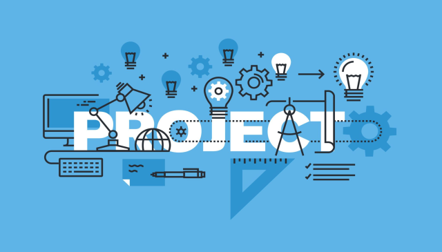
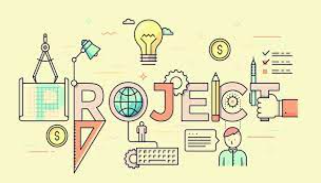
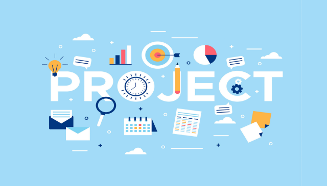

Hello, I’m
Mehmet Akif.

A senior-year design student who trying to specialize in 3D
modeling & texturing.
01 / PROJECT NAME
Goblin concept digital sculpture with human-like skin. Learned a lot of quick tips and look development.
Sculpted in ZBrush, Retopologized and UVs done in Maya, Textured in Mari, Rendered using Arnold.

02 / PROJECT NAME
Subsurface weight, specular roughness, diffuse maps generated with the procedure and manual techniques.

